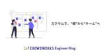

クラウドワークス エンジニアブログ
https://engineer.crowdworks.jp/
日本最大級のクラウドソーシング「クラウドワークス」の開発の裏側をお届けするエンジニアブログ
フィード

【RubyKaigi】英語セッションも怖くない！チームで挑む「モブセッション」の効果 1
1
クラウドワークス エンジニアブログ
チームでどう楽しむ？CrowdWorksは「モブセッション」に挑戦！英語セッションもみんなで乗り越え、学びと交流を深めました。
7日前

スクラムで、“個”から“チーム”へ 1
クラウドワークス エンジニアブログ
はじめに こんにちは、クラウドワークスでエンジニアをしている沼田です。 今回は所属している「クラウドログPC管理」チームにおける活動をお伝えします。 私は、M&Aをきっかけにクラウドワークスにジョインしました。 新しい環境、新しい仲間、そして新しい開発スタイル。 最初は正直、戸惑うことも多くありました。 ですが、振り返ってみると、この変化は自分にとって大きな成長のきっかけになったと感じています。 大きな転機となったのが、スクラムの導入です。 これにより、働き方やチームとの関わり方が大きく変化したと実感しています。 環境の変化を通じて見えてきた課題と、スクラムを取り入れたことで得られた気づきにつ…
14日前

RubyKaigi2025 にてゴールドスポンサーとして協賛します
クラウドワークス エンジニアブログ
RubyKaigi2025スポンサー表明 株式会社クラウドワークスは、2025年4月16日から愛媛県松山市にて開催される、プログラミング言語 Ruby の世界最大級国際カンファレンス「RubyKaigi 2025」にて、ゴールドスポンサーとして協賛いたします。 Rubyとクラウドワークス crowdworks.jpでは創業時よりWebアプリケーション開発のフレームワークとしてRuby on Rails を使用し、その他周辺ツールの開発にもRubyのエコシステムを多分に活用しております。Rubyによって収益化できていると言っても過言ではなく、2018年以降継続的にRubyKaigiのスポンサーを…
1ヶ月前
10年運用しているサービスで生成AIコーディング時代にどう備えるか、あるいはリアーキテクチャの重要性
クラウドワークス エンジニアブログ
CrowdWorks ジャンヌチーム（技術的負債解消チーム）所属のlinyclarです。AI関連技術はど素人です。 生成AIコーディング時代の到来 いや、本当に到来しているのか、Clineなどが実務で使い物になるのかはわかりませんが1、AIによるコーディングが進化しているのは間違いありません。 仮に現段階で使い物にならないのだとしても、生成AIという技術上の問題点なのか、我々の使い方の問題なのか、切り分けて考えねばなりません。また、技術上の問題点は解消されていくのが常なので、常に我々の使い方に問題がないのか疑っていくスタンスが大事だろうと思います。 では、その使い方とは何かというと、ポイント・…
1ヶ月前
mini_racerを剪定してbundle installの時間を97%短縮した話
クラウドワークス エンジニアブログ
こんにちは。crowdworks.jpで不正利用対策チームのエンジニアをしている得能（yoshi_10_11）です。 今回は先日取り組んだmini_racerのgemを剪定した話をします。 mini_racerってなんだっけ mini_racerはRubyからJavaScriptを実行するのに利用されるgemです。JavaScriptのV8 エンジンを使って実行できる環境を提供します。 Ruby on Railsにおいてはアセットパイプライン環境においてJavaScriptコードを処理するために利用されます。 https://github.com/rubyjs/mini_racer Ruby …
1ヶ月前
AIを活用して業務効率化を図る話
クラウドワークス エンジニアブログ
はじめに こんにちは。プロダクト本部に所属しているエンジニアの孫です。 誰が、何の業務に、何時間使ったのかを可視化できるクラウド型工数管理・プロジェクト管理ツール「クラウドログ」の開発を担当しております。 今回は、私が実際にAIを利用して作業をスムーズに進めた経験について紹介いたします。 日々の業務でどのようにAIを活用しているかを説明し、AI利用で初心者の方々の参考になれば幸いです。
1ヶ月前
エンジニア採用の取り組みについての話
クラウドワークス エンジニアブログ
こんにちは。crowdworks.jpでエンジニアリングマネージャーをしている海老原です。 今回はエンジニア採用の取り組みについて共有したいと思います。 どのような流れで採用まで取り組んでいるか参考になれば幸いです。
2ヶ月前
マネージャーとデリゲーションポーカーをしたら権限レベルの認識が揃えられた話
クラウドワークス エンジニアブログ
はじめに こんにちは、クラウドワークスのエンジニアをしている尾上です。 普段は、クラウドワークス テック・クラウドワークス エージェントの開発業務をメインで行なっています。 今回は、マネージャーとデリゲーションポーカーを実施し権限レベルの認識を揃えた話をしていきたいと思います。 デリゲーションポーカーとは デリゲーションポーカーは、マネージャーとチームメンバー間で意思決定の権限委譲（デリゲーション）について明確にし、共通理解を得るための対話型のワークショップやゲームです。 意思決定の委譲レベルを７段階に分け、それぞれのレベルに対応するカードを使用します。会議中に具体的な決定事項について、管理者…
2ヶ月前
DDD未経験が約1年DDDに触れて感じた理想と現実
クラウドワークス エンジニアブログ
はじめに こんにちは、@momo-0826です。 約1年程前からクラウドリンクスで主にバックエンドを中心とした開発業務に携わっています。 クラウドリンクスではDDDを使用した開発が行われているのですが、DDD未経験だった私が約1年程DDDに触れて感じた自分なりの感想を書いていこうと思います。
3ヶ月前
Terraform / OpenTofuでtfstate関連のブロックの削除を便利に行う
クラウドワークス エンジニアブログ
手動での削除が手間だったTerraform/OpenTofuの import/moved/removed ブロックをGitHub Actionsを活用して効率化しました。その具体的な仕組みをご紹介します。
3ヶ月前
元経理のエンジニアがクラウドワークスで学んだこと
クラウドワークス エンジニアブログ
こんにちは、crowdworks.jpのWebアプリケーションエンジニアをしている椎田です。 2024年4月にクラウドワークスに中途入社し、早くも9ヶ月が経過しました。 入社してから学んだことや嬉しかったこと、経理経験が活きた場面などについて書いてみます。
4ヶ月前
プロダクト開発の2024年総括とシステム思考
クラウドワークス エンジニアブログ
2024年総括とシステム思考 年の瀬ご多端の折、皆様におかれましては本年も大変お世話になりました。プロダクト開発部部長の塚本 @hihatsです。 本記事はクラウドワークスグループAdvent Calendar 2024 シリーズ4の25日目の記事です。 昨年に引き続き、プロダクト開発部として今年取り組んできたことと、全社におけるプロダクト開発の動きから整理していきますが、 3ヶ月ほど前に書いた自社の開発組織の強みを定義するという記事の中でも軽く触れたシステム思考の話を中心軸に置きつつ進めていきます。 *1 engineer.crowdworks.jp また今年はアドベントカレンダーの数も昨年…
5ヶ月前
crowdworks.jp のデザインシステム構築活動を振り返る 2024 (実装編)
クラウドワークス エンジニアブログ
この記事はクラウドワークス Advent Calendar 2024 シリーズ 1 の 18日目の記事です。 こんにちは、crowdworks.jp のデザインシステム構築に携わっているエンジニアの @t0yohei です。 昨年は、crowdworks.jp のデザインシステム構築活動を振り返る 2023 (実装編)という記事で、デザインシステム実装の 0 -> 1 について書きました。 デザインシステム実装 2 年目である今年は、1 -> 10 として「やったこと」と逆に今の段階では「やらなかったこと」を書いてみたいと思います。 デザインシステムを実装中の方、これからデザインシステムを実装…
5ヶ月前
2024年 crowdworks.jp の SRE チームでやったこと
クラウドワークス エンジニアブログ
この記事は クラウドワークス Advent Calendar 2024 シリーズ2 17日目の記事です。 こんにちは。クラウドワークス SRE チームの田中（@kangaechu）です。 この記事では クラウドワークス の SRE チームが2024年にやったことを記載していきます。 2024年も様々な挑戦を通じて、クラウドワークスの信頼性を向上させるための多岐にわたる改善を行いました。本記事では、それらの活動をご紹介します。 2023年の振り返り 去年までにどのようなことをしてきたかはこの記事を参照ください。 engineer.crowdworks.jp 2024年にやったこと
5ヶ月前
日々成長を続けるプロダクト開発チームを解剖してみた〜メガ進化するデリバード〜
クラウドワークス エンジニアブログ
この記事は クラウドワークス グループ Advent Calendar 2024 シリーズ3の13日目の記事です。 こんにちは。株式会社クラウドワークスで「クラウドワークス」の開発を担当しているエンジニアの keigo0331 です。 最近はデータサイエンスに興味を持ち始め、趣味で数学や統計学を勉強しているのですが、難易度の高さに悪戦苦闘しています。一応大学では数学を専攻していましたが、約10年のブランクがあるとほとんど忘れてしまうものですね。 さて、今回の記事では、私が所属しているプロダクト開発チーム「デリバードチーム」についての内容です。 私は入社以来このチームで活動しており、気づけば3年…
5ヶ月前
ビビリのためのRDS MySQL→Aurora移行
クラウドワークス エンジニアブログ
この記事は クラウドワークス Advent Calendar 2024 シリーズ3 11日目の記事です。 こんにちは。クラウドワークス SRE チームの田中（@kangaechu）です。 クラウドワークス では2024年12月に クラウドワークスのマスタデータベースをMySQL から Aurora に移行しました。今回はその移行について書きます。 クラウドワークスは、2012年にリリースされた日本最大級のクラウドソーシングサービスです。 クラウドソーシングを通じて、企業とフリーランスのマッチングを行い、業務の効率化を支援するため、仕事の公開、応募、受注、進捗管理、報酬の支払いなど、さまざまな機…
5ヶ月前
Aurora MySQLとRedshiftのゼロETL統合を本番導入しようとしてダメだった
クラウドワークス エンジニアブログ
Aurora MySQLとRedshiftのゼロETL統合を本番導入しようとしてダメだった この記事は クラウドワークスグループ Advent Calendar 2024 シリーズ2 の7日目の記事です。 クラウドワークスのSREチームに所属しています@ciloholicです。 今年の7月末に Aurora MySQLとRedshiftのゼロETL統合が本番導入出来るか検証しました という記事を投稿しました。その記事の最後で本番導入に向けて意気込んでいたのですが、本番導入を断念することになった経緯について話していきます。 検証記事の要約 Aurora MySQLとRedshiftのゼロETL統…
5ヶ月前
全社横断エンジニアリングの壁
クラウドワークス エンジニアブログ
この記事は クラウドワークス グループ Advent Calendar 2024 シリーズ 1の3日目の記事です。 こんにちは。クラウドワークスでエンジニアをしている高橋(@suzunedev)です。 4月から、とあるプロジェクトに参画して全社横断エンジニアリングの壁に挑戦しています。個人的には複数事業部と連携しながら開発を行なっていくのは初めての試みでして、事業部の壁を超えたエンジニアリングというところから、全社横断エンジニアリングの壁と表現して、どのようなことを行なってきたかを振り返ってみようと思います。
5ヶ月前
生成AIでFigmaからスマホアプリUI作成を自動化して楽したかった話
クラウドワークス エンジニアブログ
こんにちは。クラウドワークスのiOSアプリ開発を担当している野村です。 今回は「生成AIでFigmaからスマホアプリUI作成を自動化して楽したい！」という取り組みについて共有したいと思います。タイトルが「楽したかった」と過去形なのは、執筆時点ではあまりうまくいかなかったためですが、デザインから実装までの流れに課題を感じているエンジニアやデザイナーにとって少しでも参考になれば幸いです。
6ヶ月前
脆弱性ホントにないですか？セルフペネトレーションテスト環境を構築してみた話
クラウドワークス エンジニアブログ
こんにちは！クラウドログでSREを担当している宮城です。 今回はセキュリティ勉強の一環として、セルフペネトレーションテスト環境を構築し、 Kali Linuxから自身のサービスの脆弱性を調査できるか検証してみた話について、 やった内容とその手順について紹介させていただこうと思います。
6ヶ月前
AIが工数データを要約する「AI分析サマリレポート」をリリースしました
クラウドワークス エンジニアブログ
はじめに こんにちは、工数管理SaaS「クラウドログ」でエンジニアをしている越阪部です。 普段の業務では、Webフロントエンドを中心とした開発を担っています。 この記事では、クラウドログに蓄積された工数データを、生成AIが自然言語で要約してくれる「AI分析サマリレポート」の概要や開発裏話を紹介したいと思います。 AI分析サマリレポートとは この機能は、「工数レポート」という工数データを集計・分析するためのページに組み込まれています。 工数レポートページ 工数レポートは、クラウドログに蓄積された工数データをさまざまな切り口で集計して、結果をグラフやテーブル形式で表示することで分析を助けてくれる便…
7ヶ月前
カスタムコンポーネントを実装してみて思ったこと
クラウドワークス エンジニアブログ
この記事を書いているひと CrowdWorks.jp デザイン基盤チームでデザイナーをやらせていただいている id:ksmxxxxxx です。 普段は CrowdWorks.jp のデザインシステム構築における、UI デザインと Vue コンポーネント作成をメインに活動しています。 今回は「デザインに軸足を置きながら、Vue コンポーネントを作っているデザイナーがデザインとフロントエンドの狭間で右脳と左脳を殴り合わせながらカスタムコンポーネントを実装した」ポエムをお送りします。 あくまで個人の感想であり他にも解釈はありますが、ひとりのデザイナーの中でデザインする自分とコーディングする自分が河原…
7ヶ月前
自社の開発組織の強みを定義する
クラウドワークス エンジニアブログ
ようやく涼しくなってきましたね。もう少し漸進的に気温が下がってほしい。プロダクト開発部部長の塚本@hihats です。 前置き この二、三年くらいは個人的にシステム思考への傾倒があり、以前ここに書いた変化に適応するソフトウェアアーキテクチャと組織構造への道程も、Qiitaに書いたソシオテクニカルアーキテクチャ概要もその系譜の記事だった。今回は、エレガントパズルという書籍を読んでいて、そこかしこにドネラ・メドウズ公の話が出てくるので改めて私もシステム思考について記事を書こうと考えていた。 そんな折、他社のCTOと話す機会があってそこで「自社の開発組織や開発力にそこまで特別さを感じていないんですよ…
7ヶ月前
Prismaでデータ移行した話
クラウドワークス エンジニアブログ
こんにちは、 @ttaka_66 です。 CROWDWORKSコンサルティングの業務効率化を目的とした自社システムを開発しています。自社システムではO/RマッパーにPrismaを利用しています。今回はスキーマ変更を伴うデータ移行を行ったので、それについて記載します。
9ヶ月前
Aurora MySQLとRedshiftのゼロETL統合が本番導入出来るか検証しました
クラウドワークス エンジニアブログ
Aurora MySQL Zero ETL Integrations クラウドワークスのSREチームに所属しています@ciloholicです。 2023年11月にAurora MySQLとRedshiftのゼロETL統合がGAされました。この度、ゼロETL統合が本番導入可能かを検証する機会があったので、その検証結果を記載します。 aws.amazon.com 2024年7月時点での検証結果ですので、時間経過によって内容が変わっている可能性があります。その点は十分ご注意ください。 背景 まず、ゼロETL統合の検証しようと考えた背景について軽く説明したいと思います。クラウドワークスでは、MySQL…
9ヶ月前
フロントエンド開発チュートリアルを作成し開発ハードルを下げた話
クラウドワークス エンジニアブログ
crowdworks.jpの開発現場で新しくフロントエンド開発を行う方がスムーズに業務に入れる、作業のハードルを下げるために、フロントエンド開発の知識習得のためのチュートリアルを作成した話です。
10ヶ月前
Elasticsearch RailsからSearchkickへの移行で気づいたSearchkickの注意点
クラウドワークス エンジニアブログ
こんにちは、クラウドソーシングサービス「クラウドワークス」でエンジニアをしている神山です。クライアントとワーカーのマッチングに関わる機能の運用・改善を行うデリバードチームに所属しています。 本サービスではRails環境での検索エンジン運用に Elasticsearch Rails を使用してますが、この度 Searchkick への移行を決定し、現在移行作業中です。この移行作業を通じて、Elasticsearch RailsとSearchkickの間にはいくつか顕著な違いがあり、特にElasticsearch Railsからの移行に際して注意が必要な点がいくつか存在しました。今回はその点を中心…
1年前
パフォーマンス改善：効率的なCSVインポートでSQL発行回数を大幅削減
クラウドワークス エンジニアブログ
はじめに はじめまして、クラウドログのバックエンド開発を担当している崎岡と申します。 [クラウドログ]は、プロジェクト管理や工数管理を効率化するためのSaaS、作業時間の入力や進捗の可視化を簡単に行える機能が特徴です。そのプロダクトの機能改善について今回はお話ししようと思います。
1年前